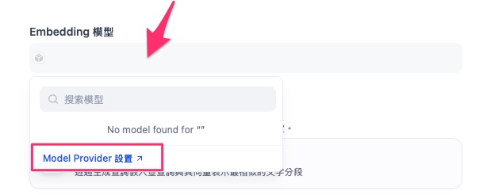
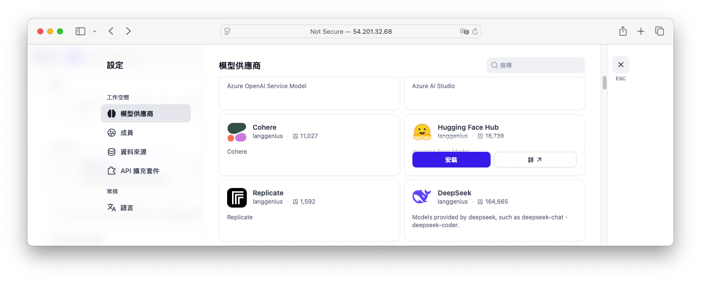
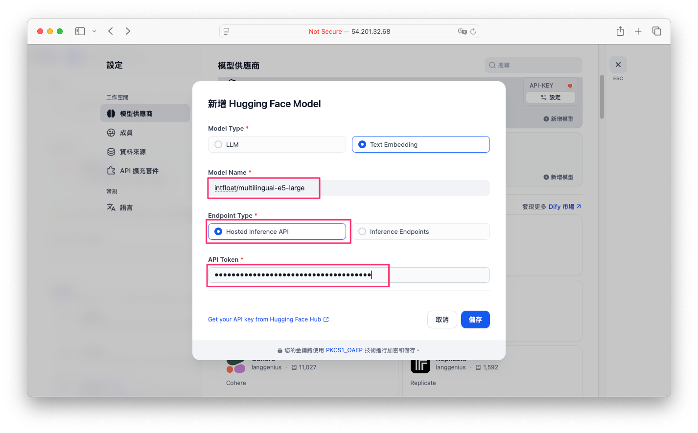

使用 Dify 打造 AI 客服知識庫
在建立 AI 客服系統時，一個好的知識庫是關鍵。透過 Dify，我們可以快速匯入資料並結合最新的 AI 技術如 Embedding、Rerank 與 RAG，打造準確又智慧的客服查詢系統。本文將手把手教你如何完成這個流程。
什麼是 RAG？
RAG（Retrieval Augmented Generation）是一種將語言模型（LLM）的生成能力與檢索系統結合的技術。透過先從外部知識庫中檢索相關文件，再將檢索到的內容當作 prompt 的一部分，能讓模型回答私有資料或訓練截止後的新資訊相關問題。若模型不確定答案，就應直接回覆「我不知道」以確保回應真實可靠。
RAG 核心概念
- 索引（Indexing）
- 載入（Load）：使用 Document Loader 將資料來源（例如 PDF、Markdown 同檔案）讀取成
Document物件。 - 切分（Split）：以 Text Splitter 將大型文件切成可被模型處理的小段落，避免超過上下文視窗限制。
- 存儲（Store）：將切分後的段落利用 Embeddings 轉成向量，並儲存在 VectorStore（例如 Qdrant、Chroma、FAISS）中以便後續檢索。

- 檢索與生成（Retrieval & Generation）
- 檢索（Retrieve）：用 Retriever 根據使用者提問搜尋最相關的向量段落。
- 生成（Generate）：將檢索到的段落與使用者問題一起送入 ChatModel（或 LLM），讓模型生成回答。

認識 Dify 知識庫的架構
在 Dify 中，知識庫（Knowledge Base）其實是由兩個主要部分構成：
- 資料內容：例如 FAQ 問題與答案，或是知識文件。
- 向量化（Embedding）處理：將文字資料轉換為向量，方便後續查詢比對。
匯入資料的三種方式
當你進入 Dify 後台頁面後，如圖所示，只要點選上方的 「知識庫」 分頁（見紅色框標示處），就可以進入知識庫管理介面。
{kind=link}
接著，點擊左側 「Create Knowledge」（見紅色箭頭所指處），即可開始建立你自己的 AI 知識庫。這裡你可以上傳自己的 FAQ、產品說明、技術文檔等資料，進行向量化與查詢設定。
Info
關於知識庫的數量限制：
-
自架版（Self-hosted）：無知識庫數量上限，你可以建立任意多個知識庫，非常適合中大型企業部署。
-
雲端免費版（Cloud-hosted Free Plan）：有知識庫數量與儲存空間限制，依照 Dify 的免費額度條件而定，若超過需要升級為付費方案。
Dify 支援以下三種匯入模式：
- 檔案匯入（支援 PDF、Markdown、CSV）
- 從 Notion 匯入
- 網站爬蟲匯入
{kind=link}
本教學聚焦在「檔案匯入」最適合客服用的問答格式。你可以簡單準備一個 PDF 文件或是 Excel 表格紀錄問答。儲存為 .csv 檔後，就可以直接在 Dify 中匯入。
{kind=link}
資料分塊與向量化（Embedding）
在匯入資料後，Dify 會自動將問答一筆筆當作一個區塊（Chunk）。這對於客服系統特別合適，因為每筆資料原本就是一問一答。
{kind=link}
接著，系統會幫你進行「向量化（Embedding）」。這一步是將文字轉成數學向量，方便模型比對相似內容。建議選擇「高品質模式」，使用 AI 模型進行語意處理，而非關鍵字比對。
Info
-
高品質（推薦）：使用 AI 嵌入模型將文字轉成向量，能理解語意，查詢時能更準確地抓出相關內容，但會消耗 Token。
-
經濟模式：採用關鍵字或全文搜尋方式，不需 Token，成本低且速度快，但只能比對字面，無法理解語意。
Embedding 與 Rerank 模型比較
Dify 支援兩種主要模型：
| 類型 | 描述 | 優點 | 缺點 |
|---|---|---|---|
| Embedding | 將問句與資料向量比對 | 快速、大量篩選 | 命中率可能較低，結果較模糊 |
| Rerank | 使用語句語意精準比對（句對句） | 精準度高 | 速度慢、成本高 |
如果想使用 「Embedding + Rerank 混合策略」 推薦使用 Voyage 模型（它支援 Embedding 與 Rerank），效果好且價格實惠，註冊即有免費額度可用。
- 先用 Embedding 找出初步相關資料。
- 用 Rerank 模型重新排序結果，提升精準度。
但本文中為了快速展示僅採用 Embedding，並使用 huggingface 開源免費的 intfloat/multilingual-e5-large 作為示範。(稍後會講解如何設定)
三種查詢策略介紹
Dify 提供三種知識庫查詢方式：
- 向量檢索（Embedding Only）
- 全文檢索（Keyword Search）
- 混合檢索（Hybrid：向量 + 全文）
實務建議選擇「混合檢索 + Rerank」，結合語意模糊查詢與關鍵字精準匹配，再透過 Rerank 精準排序，效果最佳。
設定 Embeedding 模型
準備 Hugging Face Access Token
- 登入你的 Hugging Face 帳號，進入「Access Tokens」頁面
- 點擊 Create new token，選擇 Fine-grained，勾選「Make calls to Inference Providers」權限，並命名（例如
dify）。 - 建立後，複製該 Token，待會要填入 Dify。
{kind=link}
{kind=link}
在 Dify 後台新增 Hugging Face 模型供應商
以下是在 Dify 上設定 Hugging Face 並使用自訂 Embedding 模型的步驟，請依序操作：
-
在建立知識庫的頁面中點選
Embedding 模型欄位。點擊Model Provider設置 亦可進入 Dify 後台，點右上角用戶大頭貼 → Settings（設定） → Model Provider（模型供應商）
-
在列表中找到 Hugging Face Hub，點 Install（安裝），完成後回到模型供應商頁面 
-
設定 Hugging Face Text Embedding 模型  在「新增 Hugging Face Model」彈窗中，依下列欄位填寫：
欄位 操作說明 Model Type 選擇 Text Embedding Model Name 輸入欲使用的 HF 模型名稱，例如： intfloat/multilingual-e5-largeEndpoint Type 保持預設 Hosted Inference API API Token 貼上先前從 Hugging Face 取得的 Access Token 完成後按 儲存，即可在 Dify 中使用 Hugging Face 提供的 Embedding 模型。
{kind=link}
{kind=link}
{kind=link}
{kind=link}
在知識庫建立頁面選擇自訂模型
- 回到 Knowledge → Create Knowledge → 檔案匯入流程中
- 展開 Embedding 模型 下拉選單，將看到剛剛新增的模型名稱
- 檢索設定選擇向量檢索
{kind=link}
Info
-
Top K： 指的是從向量資料庫中，依照與查詢向量相似度排序後，回傳前 K 筆最相關的文本片段。例如設定為 3，就會取出相似度最高的 3 筆資料。
-
Score 閾值： 指過濾相似度分數低於此值的結果。設定為 0.5，代表只有相似度 ≥ 0.5 的片段才會被保留，避免過於不相關的回傳。
完成分數與筆數設定後，點擊「儲存並處理」，Dify 就會自動將匯入的文件向量化並存入向量資料庫，後續查詢即可快速命中相關內容。
{kind=link}
新增或擴充知識資料
除了匯入完整 CSV 檔案外，你也可以：
- 手動新增單筆問答資料
- 上傳額外的 Excel/CSV/PDF 等文件進行擴充知識
每筆資料都會經過自動向量化與關鍵字提取，非常方便管理與搜尋。
{kind=link}
實測查詢效果
完成知識庫設定後，即可在 Dify 後台進行「召回測試」。輸入問題如：
- 「支援哪些付款方式？」
- 「營業時間？」
系統將從向量資料庫中找出語意相近的問答，進行智能匹配並顯示相關回答。
{kind=link}
整合客服流程（預告）
本文教學先介紹如何建立 Dify 知識庫。下一篇，我們將說明如何將知識庫整合到客服流程中，並實作出一個完整的 AI 客服對話系統。

總結
大家可以根據需求選擇合適的 Embedding 模型。本文所採用的 multilingual‑e5‑large 適合於中短文本的快速 embedding(輸入的 tokens 上限只有 512 tokens 偏少)，但對於長文本或需精確檢索的任務，建議使用更強大的 BGE‑M3（具多功能 retrieval）搭配 BGE‑Reranker‑V2‑M3 做 reranker，能兼顧效率與效果。
| 任務類型 | 建議模型組合 | 解說 |
|---|---|---|
| 中短篇 embedding / 多語 clustering | multilingual‑e5‑large | 快速初始化，適合資源有限的小型應用 |
| 長文本 retrieval | BGE‑M3 | context up to 8192 ，支援 dense/sparse/ColBERT |
| 精細重排序 | BGE‑M3 + BGE‑Reranker‑V2‑M3 | embedding + cross‑encoder reranking 提升結果 |
使用 Dify 建立 AI 客服知識庫具備以下優勢：
- 快速匯入資料（CSV、PDF、Notion、網站）
- 支援高品質向量化與語意查詢
- 可選擇混合查詢與 Rerank 提高精準度
- 模型如 Voyage 提供高性價比方案
掌握了 Dify + Embedding + Rerank + RAG 的精髓，就能打造真正能理解語意、提供準確回答的 AI 客服系統。